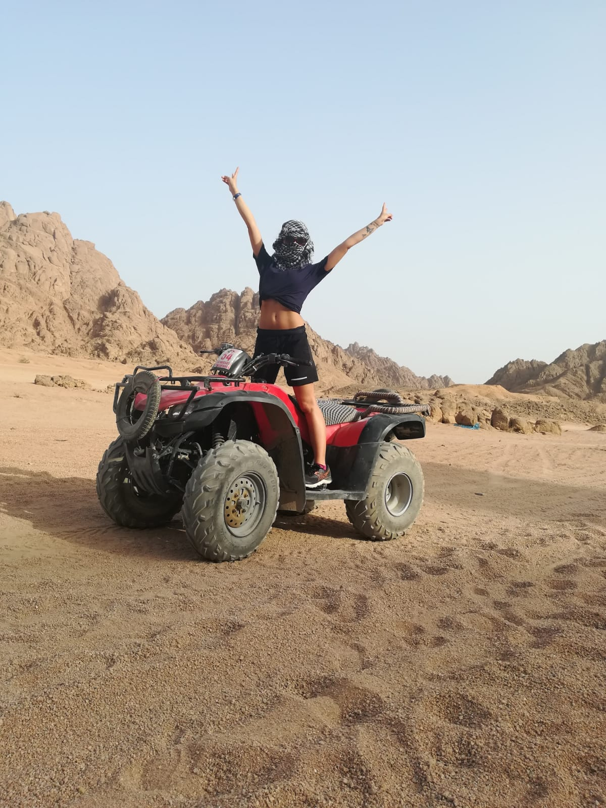
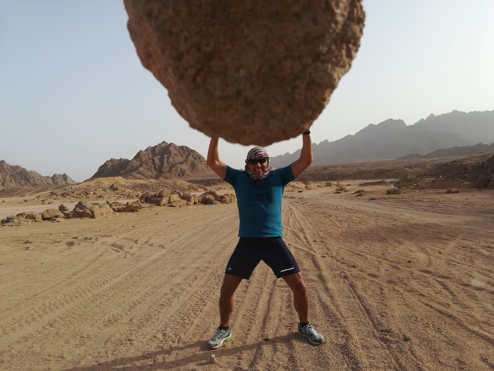
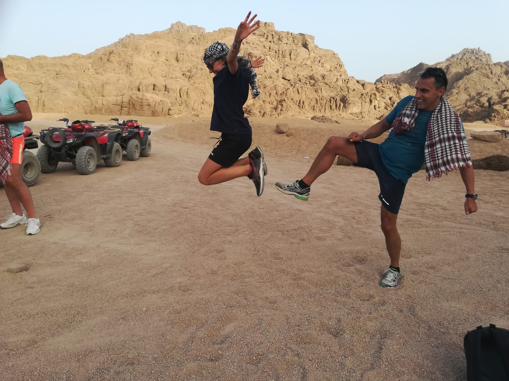
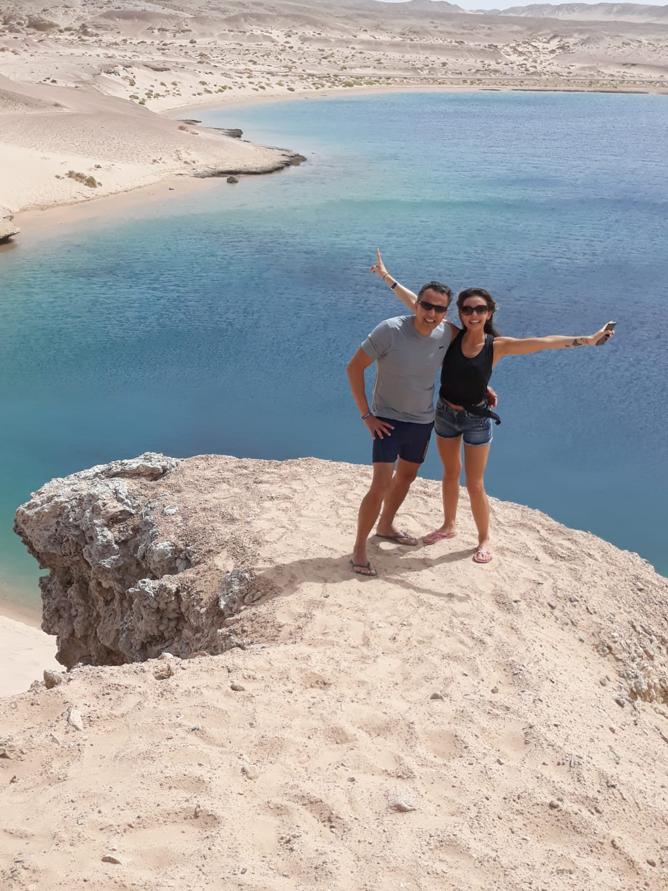
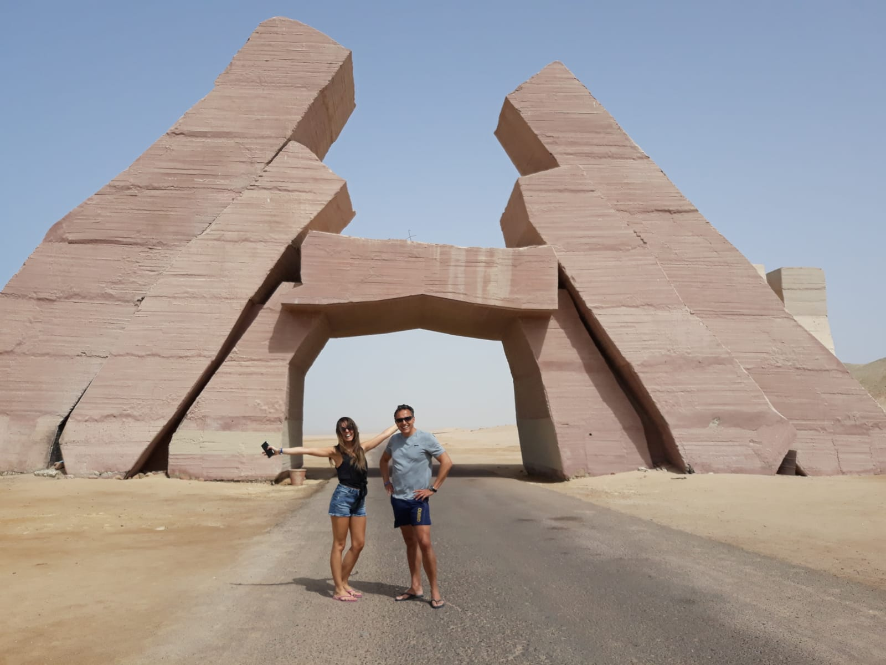
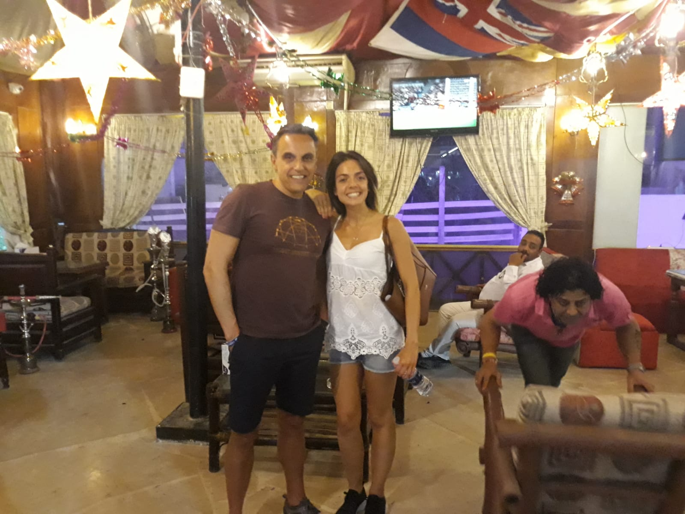

Egitto 2019
Nel 2019 io e papa` siamo partiti per una vacanza avventura a Sharm el Sheik, dove siamo stati una settimana. Oltre a mare, piscina, buffet infiniti, ping pong, relax e palestra, abbiamo fatto diverse avventure: una serata tra le vie affollate del Cairo, snorkeling alla barriera corallina, visita ai migliori siti naturali, bevuto il the coi beduini e, soprattutto, una gita in quad nel deserto. Questa e` stata in assoluto l`esperienza piu` bella! Qui sotto qualche immagine-ricordo.
  La gita in Quad
I migliori ricordi di questa vacanza
- Il mare cristallino dell`Egitto 
- I grandiosi siti archeologici 
- I bar Egizi 
Le raccomandazioni per una vacanza in Egitto
Dopo essere stata in Egitto, vi raccomando i seguenti esperienze da fare. Al primo posto, assolutamente, una gita nel deserto. Tuttavia, non devono mancare neppure: snorkeling sulla barriera corallina, gita al Cairo e una cena tipica. Clicca sui link qui sotto per legegre di piu` sulle raccomandazioni.
- Gita nel deserto
- Snorkeling in barriera corallina
- Gita al Cairo
- Cena tipica egiziana